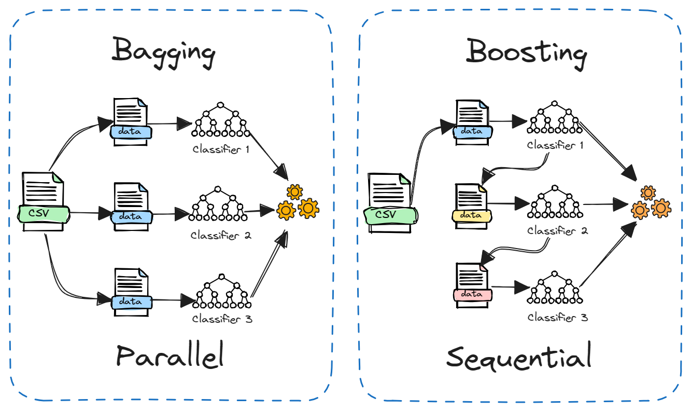
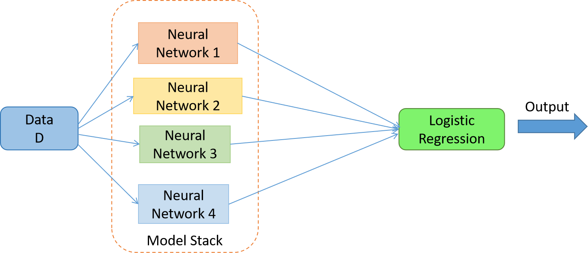
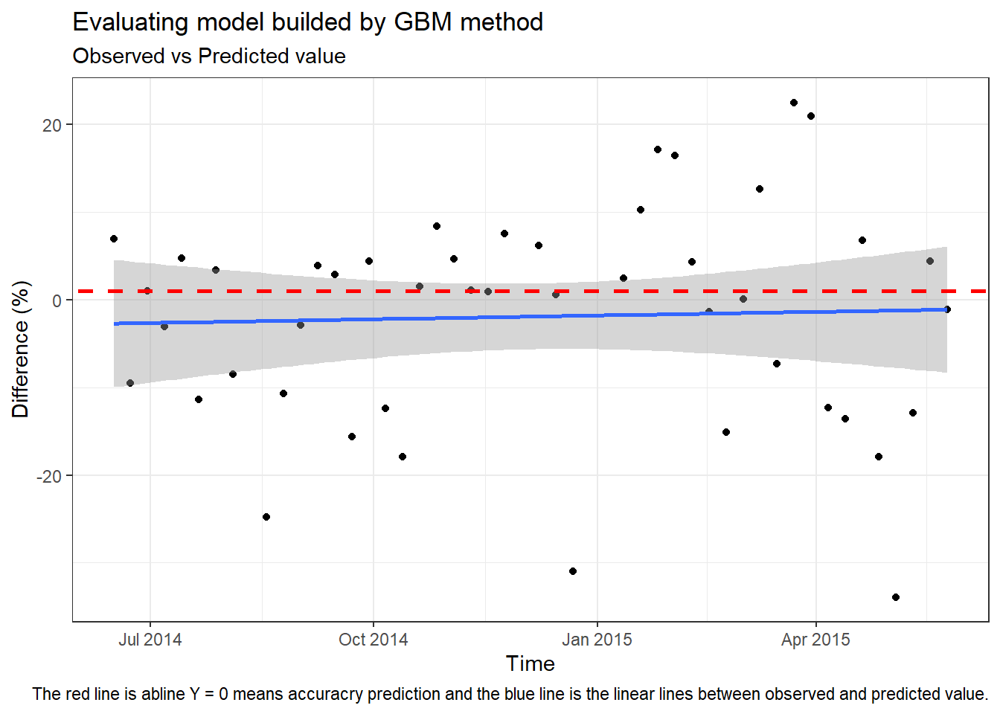

Theo (Topdev, n.d.), Machine learning (ML) hay máy học là “một nhánh của trí tuệ nhân tạo (AI), nó là một lĩnh vực nghiên cứu cho phép máy tính có khả năng cải thiện chính bản thân chúng dựa trên dữ liệu mẫu (training data) hoặc dựa vào kinh nghiệm (những gì đã được học). Machine learning có thể tự dự đoán hoặc đưa ra quyết định mà không cần được lập trình cụ thể.”
Phương pháp Machine Learning từng “gây bão” trong giới khoa học khi ra mắt vì khả năng xây dựng mô hình nhanh chóng và sự chuẩn xác của mô hình trong việc dự đoán và phân loại kết quả. Với sự phát triển của khoa học, lượng lớn dữ liệu được thu thập hay được gọi là Big Data đòi hỏi nhu cầu tính toán nhanh chóng và công cụ mạnh. Các phương pháp khoa học truyền thống lại không làm tốt việc này bằng Machine Learning.
Ngoài ra, khác với các mô hình truyền thống đòi hỏi nhiều về đáp ứng giả định và quy tắc rắc rối, Machine Learning giúp con người nhanh chóng đưa ra quyết định và có thể tự cải thiện performance của mình bằng học máy mà không cần người dùng phải tương tác nhiều.
1.2 Thuật toán Ensemble Machine Learning:
Trong machine learning tồn tại định lý “không có bữa trưa miễn phí” (No free lunch theorem), tức là không tồn tại một thuật toán mà tốt cho mọi ứng dụng và mọi tập dữ liệu. Vì ML có nhiều thuật toán khác nhau và tùy vào đặc tính của bộ dữ liệu mà thuật toán ML sẽ tính ra kết quả khác nhau. Muốn tìm ra thuật toán phù hợp, người sử dụng phải cần nhiều thời gian để test và điều chỉnh hệ số (tuning hyperparameters) để đạt độ chính xác cao.
Và thuật toán Ensemble ML có thể giúp người dùng giảm thời gian trong việc testing bằng cách kết hợp các mô hình này với nhau. Theo (Cuong Sai 2020),“Ý tưởng của việc combine các mô hình khác nhau xuất phát từ một suy nghĩ hợp lý là: các mô hình khác nhau có khả năng khác nhau, có thể thực hiện tốt nhất các loại công việc khác nhau (subtasks), khi kết hợp các mô hình này với nhau một cách hợp lý thì sẽ tạo thành một mô hình kết hợp (combined model) mạnh có khả năng cải thiện hiệu suât tổng thể (overall performance) so với việc chỉ dùng các mô hình một cách đơn lẻ.”
Thuật toán Ensemble ML chia thành 3 loại:
Bagging: chia bộ dữ liệu thành subsamples và xây dựng thành model cùng kiểu với nhau để đưa ra dự đoán.
Boosting: cũng chia dữ liệu thành subsamples nhưng việc xây dựng mô hình không diễn ra cùng lúc như bagging mà là theo chuỗi nối tiếp nhau.
Bạn có thể tưởng tượng như hình dưới đây:

Hình 6: Bagging vs Boosting method.
Stacking xây dựng các mô hình khác loại từ training data và một mô hình supervisor model. Sau đó, mô hình này sẽ kết hợp các kết quả dự báo để tìm ra mô hình tốt nhất.

Hình 7: Staking method.
Vậy tiếp theo, chúng ta sẽ thử dùng Ensemble ML trong R để dự đoán.
1.3 So sánh với mô hình ARIMA:
Machine Learning làm tốt về mặt performance ở các vấn đề như: phân loại nhãn (Classification), tự học và bổ sung (AI), phân tích lớp ảnh (Neural network),… nhưng ở lĩnh vực dự đoán chuỗi thời gian (Time series forecast), ML lại không tốt bằng các phương pháp thống kê truyền thống.
2 Thực hành trong R:
2.1 Chuẩn bị dữ liệu:
Bạn có thể quay lại trang đầu tiên để lấy dữ liệu gốc và các bước để chỉnh sửa dữ liệu ở Giới thiệu.
Trong phần này, đối với Machine Learning, ta nên chia bộ dữ liệu thành 3 bộ: training, testing và forecasting dataset. Ngoài ra, ML cần dữ liệu lớn nên ta sẽ tính theo tuần chứ không theo tháng như các phần trước.
Code
#Sum by daily and remove negative value:weekly_df<-product_demand %>%select(c(Warehouse, Date, Order_Demand)) %>%mutate(order_date =floor_date(Date, unit ='week', # setting up week commencing Mondayweek_start =getOption("lubridate.week.start", 1))) %>%group_by(order_date) %>%summarise(Order_Demand =sum(Order_Demand)) %>%ungroup()
Giống ý tưởng của ARIMA, Ensemble ML cũng phân tích mối tương quan giữa giá trị tại thời điểm t với thời điểm t-1, t-2,… Và vì ta đã có dữ liệu tại thời điểm t nên ta cần tính giá trị tại các thời điểm t-1, t-2 bằng hàm lag.
Trong R, có hàm ts_lags để kiếm tra mức độ tương quan giữa biến hiện tại và các biến trong quá khứ. Mặc định, hàm sẽ tính cho ta trong 12 lags nhưng ta có thể chỉ định bằng đối số: lags = c()
Dựa vào biểu đồ trên này, ta thấy được mối quan hệ tuyến tính theo hướng tích cực giữa dữ liệu chuỗi và giá trị của nó ở lag 52 (nghĩa là 1 năm sau) và hướng tiêu cực với giá trị của nó ở lag 13.
Do đó, chúng ta sẽ tạo lại bộ dữ liệu có các biến mới.
Gía trị NA xuất hiện là do ta đang lấy dữ liệu từ quá khứ thời điểm cách 1 tháng, 2 tháng và 3 tháng. Vì Machine Learning bắt buộc phải có đầy đủ giá trị nên ta có thể sử dụng cách khác để tạo ra giá trị thay thế cho NA. Mình kham khảo được cách này từ (Sauravkaushik8 Kaushik 2019).
2.2.2 Outliers:
Ngoài ra, vấn đề về outliers cũng cần được quan tâm. Outlier là các giá trị có vẻ “lệch” hoặc không bình thường so với toàn bộ dữ liệu. Nguyên nhân xuất hiện outlier có thể do các biến cố không lường trước hoặc đơn giản là sai sót trong việc đo lường, tính toán của người thu thập dữ liệu.
Vì mục đích của chúng ta là xây dựng mô hình nên các outliers không giúp ích nhiều. Do đó chúng ta cần loại bỏ nó trước khi mô hình hóa.
Các điểm đen lạc lỏng ở ngoài vùng boxplot chính là outliers
Biểu đồ phân bố của 3 bộ dữ liệu
Cách xử lí outliers khá đơn giản. Ở đây mình sử dụng phương pháp IQR hay còn gọi là tứ phân vị. Sau khi xử lí, bạn có thể chạy lại code trên để kiểm tra xem outliers đã được loại bỏ hay chưa.
# Tính IQRq25 <-quantile(model_data$Order_Demand, 0.25)q75 <-quantile(model_data$Order_Demand, 0.75)iqr <- q75 - q25# thiết lập giới hạn để xác định outlierslimit_iqr =1.5*iqrlower_iqr = q25 - limit_iqrupper_iqr = q75 + limit_iqr# Loại bỏ các outliersmodel_data <- model_data[-which(model_data$Order_Demand > upper_iqr | model_data$Order_Demand < lower_iqr),]## Tạo các bộ dữ liệu training,testing và forecasting:train_data <- model_data %>%filter(class =="train")test_data <- model_data %>%filter(class =="test")forecast_data <- model_data %>%filter(class =="forecast")
2.3 Dự đoán:
2.3.1 Mô hình Random Forest:
Đầu tiên chúng ta sẽ làm việc với thuật toán boosting khá phổ biến là: Random Forest.
Random Forest là một phương pháp học máy thuộc loại ensemble learning, được sử dụng chủ yếu cho các bài toán phân loại và hồi quy. Đây là một kỹ thuật mạnh mẽ và phổ biến, được phát triển bởi Leo Breiman vào năm 2001.
Về ưu Điểm:
Khả Năng Tổng Quát Cao: Random Forest thường có khả năng tổng quát tốt hơn so với các mô hình cây quyết định đơn lẻ, do giảm thiểu overfitting (quá khớp) nhờ vào sự kết hợp của nhiều cây.
Khả Năng Xử Lý Dữ Liệu Lớn và Nhiều Đặc Trưng: Random Forest có thể xử lý hiệu quả dữ liệu với số lượng lớn các đặc trưng và quan sát.
Khả Năng Đánh Giá Tầm Quan Trọng Của Các Đặc Trưng: Random Forest cung cấp thông tin về tầm quan trọng của từng đặc trưng trong việc đưa ra dự đoán, giúp ích trong việc chọn lọc và phân tích đặc trưng.
Về nhược Điểm:
Khó Giải Thích: Mặc dù Random Forest có hiệu suất tốt, nhưng các mô hình cây quyết định kết hợp lại có thể khó giải thích và không trực quan bằng các mô hình đơn giản hơn.
Tốn Tài Nguyên Tính Toán: Đặc biệt khi số lượng cây lớn, Random Forest có thể yêu cầu nhiều tài nguyên tính toán và bộ nhớ.
Phân tích thêm về mức độ quan trọng của các biến trong mô hình. Ta thấy biến lag_50 đóng vai trò quan trọng nhất, đúng như dự đoán của ta khi phân tích ở trên về mối tương quan.
Code
## visualise the variable importance rft_model %>%h2o.varimp_plot()
library(plotly)pred %>%plot_ly() %>%add_lines(x =~ date, y =~ actual, name ='Actual') %>%add_lines(x =~ date, y =~ predict, name ='Random Forest', line =list(dash ='dot'))
Khi dùng dữ liệu của bộ Training data, ML dự đoán lại gần như sát với dữ liệu thực tế. Nhưng khi có dữ liệu mới vào Machine Learning không dự đoán tốt được. Ví dụ như dưới đây.
No trace type specified:
Based on info supplied, a 'scatter' trace seems appropriate.
Read more about this trace type -> https://plotly.com/r/reference/#scatter
No trace type specified:
Based on info supplied, a 'scatter' trace seems appropriate.
Read more about this trace type -> https://plotly.com/r/reference/#scatter
No trace type specified:
Based on info supplied, a 'scatter' trace seems appropriate.
Read more about this trace type -> https://plotly.com/r/reference/#scatter
No trace type specified:
Based on info supplied, a 'scatter' trace seems appropriate.
Read more about this trace type -> https://plotly.com/r/reference/#scatter
2.3.2 Mô hình GLM:
Chúng ta thử thêm 1 số mô hình khác của ML. Ở dưới đây là mô hình Geleralised linear model sử dụng phương pháp OSL để tính toán.
No trace type specified:
Based on info supplied, a 'scatter' trace seems appropriate.
Read more about this trace type -> https://plotly.com/r/reference/#scatter
No trace type specified:
Based on info supplied, a 'scatter' trace seems appropriate.
Read more about this trace type -> https://plotly.com/r/reference/#scatter
No trace type specified:
Based on info supplied, a 'scatter' trace seems appropriate.
Read more about this trace type -> https://plotly.com/r/reference/#scatter
No trace type specified:
Based on info supplied, a 'scatter' trace seems appropriate.
Read more about this trace type -> https://plotly.com/r/reference/#scatter
2.3.3 Mô hình Auto ML:
Trong gói package {h2o} của R có mô hình “Auto Machine Learning” (AutoML) có thể tự động hóa quy trình đào tạo mô hình học máy được giám sát (supervised ML). AutoML tìm thấy mô hình tốt nhất, đưa ra khung đào tạo và phản hồi, đồng thời trả về đối tượng H2OAutoML, chứa bảng xếp hạng gồm tất cả các mô hình đã được đào tạo trong quy trình, được xếp hạng theo chỉ số hiệu suất mô hình mặc định.
No trace type specified:
Based on info supplied, a 'scatter' trace seems appropriate.
Read more about this trace type -> https://plotly.com/r/reference/#scatter
No trace type specified:
Based on info supplied, a 'scatter' trace seems appropriate.
Read more about this trace type -> https://plotly.com/r/reference/#scatter
No trace type specified:
Based on info supplied, a 'scatter' trace seems appropriate.
Read more about this trace type -> https://plotly.com/r/reference/#scatter
No trace type specified:
Based on info supplied, a 'scatter' trace seems appropriate.
Read more about this trace type -> https://plotly.com/r/reference/#scatter
2.3.4 Mô hình Boosting:
Tiếp đó, chúng ta sẽ thử với thuật toán boosting khá phổ biến là: Stochastic Gradient Boosting.
Stochastic Gradient Boosting: Là một biến thể của gradient boosting, kết hợp các yếu tố ngẫu nhiên trong quá trình huấn luyện để cải thiện tính chính xác và khả năng tổng quát của mô hình. Thay vì sử dụng toàn bộ dữ liệu huấn luyện để xây dựng mỗi mô hình trong chuỗi, Stochastic Gradient Boosting chỉ sử dụng một mẫu ngẫu nhiên (subsample) của dữ liệu. Mỗi mô hình mới được huấn luyện để sửa chữa các sai số của các mô hình trước đó.
Mục tiêu là giảm thiểu hàm mất mát (loss function) bằng cách sử dụng gradient descent.
Code
library(caret)# Tạo một đối tượng control cho cross-validationfitControl <-trainControl(method="repeatedcv", number=10, repeats=10)# Trong đó# method = 'repeatedcv': sử dụng cross-validation với các tham số sau:# number = 10 có nhĩa là quá trình cross-validation cần chia dữ liệu gốc thành 10 phần bằng nhau# repeats = 10 có nghĩa là quá trình cross-validation cần lặp lại 10 lần# Stochastic Gradient Boostingset.seed(825)gbmFit1 <-train(Order_Demand~., data = train_data %>%select(-c(order_date,class)), method ="gbm",trControl = fitControl,## This last option is actually one## for gbm() that passes throughverbose =FALSE)
Sau khi đã training model, ta sẽ dùng mô hình đó để dự đoán và so sánh với giá trị thực tế ở testing data. Ta sẽ có kết quả như dưới đây:
Kết quả có vẻ ổn hơn Random Forest nhưng vẫn có 2 outliears vì độ chênh lệch lên đến 100-200%.
Code
predict<-data.frame(Period = test_data$order_date,Predicted =predict(gbmFit1, newdata = test_data %>%select(-c(order_date,class))),Observed = test_data$Order_Demand) %>%mutate(Diff =round((Observed - Predicted)/Observed*100,2),Check =ifelse(Diff <=5& Diff >=-5, "Passed","Failed"))library(gt)library(gtExtras)gt(predict %>%count(Check) %>%mutate(Per =round(n/nrow(predict),3))) %>%cols_label(Check =md("**Status**"),n =md("**Count**"),Per =md("**Percentage**")) %>%tab_header(title =md("**Evaluating the model's accuracy**"),subtitle = glue::glue("Forecasting from {min(test_data$order_date)} to {max(test_data$order_date)}")) %>%tab_source_note(source_note =str_glue("Smaller 5% means passed")) %>%gt_theme_538() %>%data_color(columns =c("Check"),method ="factor",palette =c("red","blue"))ggplot(data = predict,aes(x = Period, y = Diff)) +geom_point() +geom_smooth(method ="lm")+geom_abline(intercept =1, slope =0, color="red", linetype="dashed", size=1)+xlab('Time') +ylab('Difference (%)') +theme_bw()+labs(title ="Evaluating model builded by GBM method",subtitle ="Observed vs Predicted value",caption ="The red line is abline Y = 0 means accuracry prediction and the blue line is the linear lines between observed and predicted value.")
Evaluating the model’s accuracy
Forecasting from 2014-06-16 to 2015-05-25
Status
Count
Percentage
Failed
27
0.587
Passed
19
0.413
Smaller 5% means passed

3 Tuning parameters:
Tiêu đề của mục này là keyword mà bạn cần nắm về Machine Learning. Theo nghiên cứu của (Dũng, Nguyễn Chí, n.d.), các thuật toán ML có các tham số mà việc điều chỉnh tham số sẽ ảnh hưởng đến kết quả dự đoán. Vậy chuyên đề tìm ra tham số tối ưu nhất là mục quan trọng khi bạn sử dụng ML.
Về mặt lý thuyết, có nhiều cách để tìm ra, ở bài này mình sẽ sử dụng 3 cách là:
Full Grid Search.
Random Search.
Default Search.
Và hầu như không có cách nào tìm ra tham số tối ưu nhất bằng cách thực nghiệm trên một bộ dữ liệu thực tế. Do đó, ở bài này, chúng ta sẽ lược qua cả 3 cách đã nêu trên và so sánh chúng để chọn ra các tối ưu nhất.
Vậy có quá nhiều thuật toán ML vậy, làm sao ta biết được thuật toán nào cần chỉnh tham số nào? Trong R có hàm để chúng ta tự tìm hiểu, đó là getModelInfo. Dưới đây là 1 ví dụ về thuật toán mà ta đã dùng ở trên:
Code
getModelInfo("gbm")$gbm$parameters
parameter class label
1 n.trees numeric # Boosting Iterations
2 interaction.depth numeric Max Tree Depth
3 shrinkage numeric Shrinkage
4 n.minobsinnode numeric Min. Terminal Node Size
Vậy tiếp theo chúng ta sẽ điều chỉnh tham số để tối ưu kết quả của mô hình. Chi tiết ở dưới phần code.
number of iterations, i.e. trees, (called n.trees in the gbm function).
complexity of the tree, called interaction.depth learning rate: how quickly the algorithm adapts, called shrinkage.
the minimum number of training set samples in a node to commence splitting (n.minobsinnode)
Dựa trên hướng dẫn của (Jason Brownlee 2020), ta sẽ thực hành qua cả 3 phương pháp. Code chi tiết dưới đây.
3.0.1 Phương pháp Random Search:
Random Search
control <- trainControl(method=“repeatedcv”, number=10, repeats=3, search=“random”)
---title: "Machine Learning"subtitle: "Việt Nam, 2024"categories: ["Machine Learning", "Forecasting"]bibliography: references.bibformat: html: code-fold: true code-tools: truenumber-sections: true---## Dự đoán bằng Machine Learning:### Định nghĩa về Machine Learning:Theo [@topdev], Machine learning (ML) hay máy học là "*một nhánh của trí tuệ nhân tạo (AI), nó là một lĩnh vực nghiên cứu cho phép máy tính có khả năng cải thiện chính bản thân chúng dựa trên dữ liệu mẫu (training data) hoặc dựa vào kinh nghiệm (những gì đã được học). Machine learning có thể tự dự đoán hoặc đưa ra quyết định mà không cần được lập trình cụ thể.*"Phương pháp Machine Learning từng "gây bão" trong giới khoa học khi ra mắt vì khả năng xây dựng mô hình nhanh chóng và sự chuẩn xác của mô hình trong việc dự đoán và phân loại kết quả. Với sự phát triển của khoa học, lượng lớn dữ liệu được thu thập hay được gọi là Big Data đòi hỏi nhu cầu tính toán nhanh chóng và công cụ mạnh. Các phương pháp khoa học truyền thống lại không làm tốt việc này bằng Machine Learning.Ngoài ra, khác với các mô hình truyền thống đòi hỏi nhiều về đáp ứng giả định và quy tắc rắc rối, Machine Learning giúp con người nhanh chóng đưa ra quyết định và có thể tự cải thiện performance của mình bằng học máy mà không cần người dùng phải tương tác nhiều.### Thuật toán Ensemble Machine Learning:Trong machine learning tồn tại định lý “*không có bữa trưa miễn phí”* (No free lunch theorem), tức là không tồn tại một thuật toán mà tốt cho mọi ứng dụng và mọi tập dữ liệu. Vì ML có nhiều thuật toán khác nhau và tùy vào đặc tính của bộ dữ liệu mà thuật toán ML sẽ tính ra kết quả khác nhau. Muốn tìm ra thuật toán phù hợp, người sử dụng phải cần nhiều thời gian để test và điều chỉnh hệ số (tuning hyperparameters) để đạt độ chính xác cao.Và thuật toán Ensemble ML có thể giúp người dùng giảm thời gian trong việc testing bằng cách kết hợp các mô hình này với nhau. Theo [@cuongsai2020],"Ý tưởng của việc combine các mô hình khác nhau xuất phát từ một suy nghĩ hợp lý là: các mô hình khác nhau có khả năng khác nhau, có thể thực hiện tốt nhất các loại công việc khác nhau (subtasks), khi kết hợp các mô hình này với nhau một cách hợp lý thì sẽ tạo thành một mô hình kết hợp (combined model) mạnh có khả năng cải thiện hiệu suât tổng thể (overall performance) so với việc chỉ dùng các mô hình một cách đơn lẻ."Thuật toán Ensemble ML chia thành 3 loại:- Bagging: chia bộ dữ liệu thành subsamples và xây dựng thành model cùng kiểu với nhau để đưa ra dự đoán.- Boosting: cũng chia dữ liệu thành subsamples nhưng việc xây dựng mô hình không diễn ra cùng lúc như bagging mà là theo chuỗi nối tiếp nhau.Bạn có thể tưởng tượng như hình dưới đây:{fig-align="center"}- Stacking xây dựng các mô hình khác loại từ training data và một mô hình supervisor model. Sau đó, mô hình này sẽ kết hợp các kết quả dự báo để tìm ra mô hình tốt nhất.{fig-align="center"}Vậy tiếp theo, chúng ta sẽ thử dùng Ensemble ML trong R để dự đoán.### So sánh với mô hình ARIMA:Machine Learning làm tốt về mặt performance ở các vấn đề như: phân loại nhãn (Classification), tự học và bổ sung (AI), phân tích lớp ảnh (Neural network),... nhưng ở lĩnh vực dự đoán chuỗi thời gian (Time series forecast), ML lại không tốt bằng các phương pháp thống kê truyền thống.## Thực hành trong R:### Chuẩn bị dữ liệu:Bạn có thể quay lại trang đầu tiên để lấy dữ liệu gốc và các bước để chỉnh sửa dữ liệu ở [Giới thiệu](index.qmd).```{r}#| warning: false#| message: false#| echo: false#Call packages:pacman::p_load(rio, here, janitor, tidyverse, dplyr, magrittr, lubridate, stringr )#Import file:product_demand<-import("C:\\Users\\locca\\Downloads\\Historical Product Demand.csv")#Change to suitable class (I change the name dataset to product_demand to shortly write)product_demand <-product_demand %>%mutate(Date =as.Date(Date,format ="%Y/%m/%d"),Product_Category =as.factor(Product_Category))product_demand$Order_Demand <-gsub("[(]", "-", product_demand$Order_Demand)product_demand$Order_Demand <-gsub("[)]", "", product_demand$Order_Demand)product_demand$Order_Demand <-as.numeric(product_demand$Order_Demand)#Then I will create a lot of cols contain year, month, week data and just select from 2012 to 2016:product_demand <-product_demand %>%mutate(Month =month(Date),Year =year(Date),Week_day =wday(Date)) %>%filter(Year %in%c(2016:2012))```Trong phần này, đối với Machine Learning, ta nên chia bộ dữ liệu thành 3 bộ: training, testing và forecasting dataset. Ngoài ra, ML cần dữ liệu lớn nên ta sẽ tính theo tuần chứ không theo tháng như các phần trước.```{r}#| warning: false#| message: false#Sum by daily and remove negative value:weekly_df<-product_demand %>%select(c(Warehouse, Date, Order_Demand)) %>%mutate(order_date =floor_date(Date, unit ='week', # setting up week commencing Mondayweek_start =getOption("lubridate.week.start", 1))) %>%group_by(order_date) %>%summarise(Order_Demand =sum(Order_Demand)) %>%ungroup()``````{r}#| warning: false#| message: false#| echo: false## Dividing the period of date:library(xts)n<-quantile(product_demand$Date, probs =c(0.001, 0.5, 0.7, 0.99), type =1)m1<-weekly_df %>%filter(order_date <= n[[2]])m2<-weekly_df %>%filter(order_date <= n[[3]]&order_date > n[[2]])m3<-weekly_df %>%filter(order_date <= n[[4]]&order_date > n[[3]])## Transfering to xts class:demand_training<-xts(x=m1$Order_Demand,order.by=m1$order_date)demand_testing<-xts(x=m2$Order_Demand,order.by=m2$order_date)demand_forecasting<-xts(x=m3$Order_Demand,order.by=m3$order_date)## Plot the result:library(dygraphs)lines<-cbind(demand_training, demand_testing, demand_forecasting)dygraph(lines,main ="Training and testing data", ylab ="Quantity order (Unit: Millions)") %>%dySeries("demand_training", label ="Training data") %>%dySeries("demand_testing", label ="Testing data") %>%dySeries("demand_forecasting", label ="Forecasting data") %>%dyOptions(fillGraph =TRUE, fillAlpha =0.4) %>%dyRangeSelector(height =20)```Giống ý tưởng của ARIMA, Ensemble ML cũng phân tích mối tương quan giữa giá trị tại thời điểm t với thời điểm t-1, t-2,... Và vì ta đã có dữ liệu tại thời điểm t nên ta cần tính giá trị tại các thời điểm t-1, t-2 bằng hàm `lag`.Trong R, có hàm `ts_lags` để kiếm tra mức độ tương quan giữa biến hiện tại và các biến trong quá khứ. Mặc định, hàm sẽ tính cho ta trong 12 lags nhưng ta có thể chỉ định bằng đối số: `lags = c()````{r}#| warning: false#| message: falselibrary(TSstudio)ts_lags(demand_training, lags =c(13, 26, 39, 52))```Dựa vào biểu đồ trên này, ta thấy được mối quan hệ tuyến tính theo hướng tích cực giữa dữ liệu chuỗi và giá trị của nó ở lag 52 (nghĩa là 1 năm sau) và hướng tiêu cực với giá trị của nó ở lag 13.Do đó, chúng ta sẽ tạo lại bộ dữ liệu có các biến mới.```{r}#| warning: false#| message: falsemodel_data <- weekly_df %>%mutate(trend =1:nrow(weekly_df),trend_sqr = trend^2,rev_lag_13 =lag(Order_Demand, n =13),rev_lag_52 =lag(Order_Demand, n =52),season =case_when(Order_Demand ==0~0,TRUE~1) ) %>%filter(!is.na(rev_lag_52)&!is.na(rev_lag_13)) %>%mutate(class =ifelse(order_date <= n[[2]],"train",ifelse(order_date > n[[2]]& order_date <= n[[3]],"test","forecast")))```### Xử lí missing value và outliers:#### Missing value:Gía trị NA xuất hiện là do ta đang lấy dữ liệu từ quá khứ thời điểm cách 1 tháng, 2 tháng và 3 tháng. Vì Machine Learning bắt buộc phải có đầy đủ giá trị nên ta có thể sử dụng cách khác để tạo ra giá trị thay thế cho NA. Mình kham khảo được cách này từ [@sauravkaushik8kaushik2019].#### Outliers:Ngoài ra, vấn đề về *outliers* cũng cần được quan tâm. *Outlier* là các giá trị có vẻ "lệch" hoặc không bình thường so với toàn bộ dữ liệu. Nguyên nhân xuất hiện outlier có thể do các biến cố không lường trước hoặc đơn giản là sai sót trong việc đo lường, tính toán của người thu thập dữ liệu.Vì mục đích của chúng ta là xây dựng mô hình nên các outliers không giúp ích nhiều. Do đó chúng ta cần loại bỏ nó trước khi mô hình hóa.```{r}#| warning: false#| message: false#| fig-cap: "Biểu đồ phân bố của 3 bộ dữ liệu"#| fig-subcap: "Các điểm đen lạc lỏng ở ngoài vùng boxplot chính là outliers"library(viridis)ggplot(model_data,aes(x=Order_Demand,y =as.factor(class),fill =as.factor(class))) +geom_boxplot() +scale_fill_viridis(discrete =TRUE, alpha=0.6) +geom_jitter(color="black", size=0.4, alpha=0.9) +theme_minimal() +theme(legend.position="none",plot.title =element_text(size=11,hjust=1, vjust=0.5, face='bold') ) +ggtitle("A boxplot with jitter") +xlab("")+ylab("Dataset")```Cách xử lí outliers khá đơn giản. Ở đây mình sử dụng phương pháp IQR hay còn gọi là tứ phân vị. Sau khi xử lí, bạn có thể chạy lại code trên để kiểm tra xem outliers đã được loại bỏ hay chưa.[{fig-align="center"}](https://svcuong.github.io/post/remove-outliers/)```{r}# Tính IQRq25 <-quantile(model_data$Order_Demand, 0.25)q75 <-quantile(model_data$Order_Demand, 0.75)iqr <- q75 - q25# thiết lập giới hạn để xác định outlierslimit_iqr =1.5*iqrlower_iqr = q25 - limit_iqrupper_iqr = q75 + limit_iqr# Loại bỏ các outliersmodel_data <- model_data[-which(model_data$Order_Demand > upper_iqr | model_data$Order_Demand < lower_iqr),]## Tạo các bộ dữ liệu training,testing và forecasting:train_data <- model_data %>%filter(class =="train")test_data <- model_data %>%filter(class =="test")forecast_data <- model_data %>%filter(class =="forecast")```### Dự đoán:#### Mô hình Random Forest:Đầu tiên chúng ta sẽ làm việc với thuật toán boosting khá phổ biến là: *Random Forest*.Random Forest là một phương pháp học máy thuộc loại ensemble learning, được sử dụng chủ yếu cho các bài toán phân loại và hồi quy. Đây là một kỹ thuật mạnh mẽ và phổ biến, được phát triển bởi Leo Breiman vào năm 2001.Về ưu Điểm:- Khả Năng Tổng Quát Cao: Random Forest thường có khả năng tổng quát tốt hơn so với các mô hình cây quyết định đơn lẻ, do giảm thiểu overfitting (quá khớp) nhờ vào sự kết hợp của nhiều cây.- Khả Năng Xử Lý Dữ Liệu Lớn và Nhiều Đặc Trưng: Random Forest có thể xử lý hiệu quả dữ liệu với số lượng lớn các đặc trưng và quan sát.- Khả Năng Đánh Giá Tầm Quan Trọng Của Các Đặc Trưng: Random Forest cung cấp thông tin về tầm quan trọng của từng đặc trưng trong việc đưa ra dự đoán, giúp ích trong việc chọn lọc và phân tích đặc trưng.Về nhược Điểm:- Khó Giải Thích: Mặc dù Random Forest có hiệu suất tốt, nhưng các mô hình cây quyết định kết hợp lại có thể khó giải thích và không trực quan bằng các mô hình đơn giản hơn.- Tốn Tài Nguyên Tính Toán: Đặc biệt khi số lượng cây lớn, Random Forest có thể yêu cầu nhiều tài nguyên tính toán và bộ nhớ.```{r}#| warning: false#| message: false#| include: falselibrary(h2o)## specify the size of the memory allocation pool cluster. h2o.init(max_mem_size ="8G")## Set dependent and independent variabls:y ="Order_Demand"x <-setdiff(names(train_data) %>%as.h2o(), c(y, "order_date","class"))## Build model:rft_model <-h2o.randomForest(x = x, y = y, training_frame = train_data %>%as.h2o(),nfolds =10,ntrees =500,stopping_metric ="RMSE",stopping_rounds =10,stopping_tolerance =0.005,seed =1975 )```Phân tích thêm về mức độ quan trọng của các biến trong mô hình. Ta thấy biến `lag_50` đóng vai trò quan trọng nhất, đúng như dự đoán của ta khi phân tích ở trên về mối tương quan.```{r}## visualise the variable importance rft_model %>%h2o.varimp_plot()``````{r}#| warning: false#| message: falsepred<-h2o.predict(rft_model, newdata =as.h2o(train_data)) %>%as_tibble() %>%mutate(actual = train_data$Order_Demand,date = train_data$order_date)library(plotly)pred %>%plot_ly() %>%add_lines(x =~ date, y =~ actual, name ='Actual') %>%add_lines(x =~ date, y =~ predict, name ='Random Forest', line =list(dash ='dot'))```Khi dùng dữ liệu của bộ Training data, ML dự đoán lại gần như sát với dữ liệu thực tế. Nhưng khi có dữ liệu mới vào Machine Learning không dự đoán tốt được. Ví dụ như dưới đây.```{r}#| warning: false#| message: false#| include: false## Create table:plot_f<-function(model){pred<-rbind(h2o.predict(model, newdata =as.h2o(test_data)) %>%as_tibble(),h2o.predict(model, newdata =as.h2o(forecast_data)) %>%as_tibble()) %>%mutate(actual =c(test_data$Order_Demand, forecast_data$Order_Demand),date =c(test_data$order_date, forecast_data$order_date),class =c(rep("Testing",nrow(test_data)),rep("Forecasting",nrow(forecast_data))))## Dividing the data for plotting purpose:pred1 <- pred[which(pred$class =="Testing"),]pred2 <- pred[which(pred$class =="Forecasting"),]plot_ly(mode ='lines') %>%add_trace(x =~ pred1$date, y =~ pred1$actual, name ='Actual value of Testing',line =list(width =3)) %>%add_trace(x =~ pred1$date, y =~ pred1$predict, name ='Predicted value of Testing', line =list(dash ='dot',width =4)) %>%add_trace(x =~ pred2$date, y =~ pred2$actual, name ='Actual of Forecasting',line =list(width =3)) %>%add_trace(x =~ pred2$date, y =~ pred2$predict, name ='Predicted of Forecasting', line =list(dash ='dot',width =4)) %>%layout(title ="Evaluating the model's forecasting result",yaxis =list(title ='Order Demand'),xaxis =list(title ='Time') )}``````{r}plot_f(rft_model)```#### Mô hình GLM:Chúng ta thử thêm 1 số mô hình khác của ML. Ở dưới đây là mô hình **Geleralised linear model** sử dụng phương pháp OSL để tính toán.```{r}#| warning: false#| message: false#| include: false# geleralised linear model:glm_model <-h2o.glm(x = x, y = y, training_frame =as.h2o(train_data),nfolds =10,family ="gaussian",seed =1975 )``````{r}plot_f(glm_model)```#### Mô hình Auto ML:Trong gói package **{h2o}** của R có mô hình "Auto Machine Learning" (AutoML) có thể tự động hóa quy trình đào tạo mô hình học máy được giám sát (supervised ML). AutoML tìm thấy mô hình tốt nhất, đưa ra khung đào tạo và phản hồi, đồng thời trả về đối tượng H2OAutoML, chứa bảng xếp hạng gồm tất cả các mô hình đã được đào tạo trong quy trình, được xếp hạng theo chỉ số hiệu suất mô hình mặc định.```{r}#| warning: false#| message: false#| include: falseautoml_model <-h2o.automl(x = x,y = y,training_frame =as.h2o(train_data),nfolds =5,stopping_metric ="RMSE",stopping_rounds =10,stopping_tolerance =0.005,max_runtime_secs =60,seed =1975 )``````{r}plot_f(automl_model)```#### Mô hình Boosting:Tiếp đó, chúng ta sẽ thử với thuật toán boosting khá phổ biến là: *Stochastic Gradient Boosting*.Stochastic Gradient Boosting: Là một biến thể của gradient boosting, kết hợp các yếu tố ngẫu nhiên trong quá trình huấn luyện để cải thiện tính chính xác và khả năng tổng quát của mô hình. Thay vì sử dụng toàn bộ dữ liệu huấn luyện để xây dựng mỗi mô hình trong chuỗi, Stochastic Gradient Boosting chỉ sử dụng một mẫu ngẫu nhiên (subsample) của dữ liệu. Mỗi mô hình mới được huấn luyện để sửa chữa các sai số của các mô hình trước đó.Mục tiêu là giảm thiểu hàm mất mát (loss function) bằng cách sử dụng gradient descent.```{r}#| warning: false#| message: falselibrary(caret)# Tạo một đối tượng control cho cross-validationfitControl <-trainControl(method="repeatedcv", number=10, repeats=10)# Trong đó# method = 'repeatedcv': sử dụng cross-validation với các tham số sau:# number = 10 có nhĩa là quá trình cross-validation cần chia dữ liệu gốc thành 10 phần bằng nhau# repeats = 10 có nghĩa là quá trình cross-validation cần lặp lại 10 lần# Stochastic Gradient Boostingset.seed(825)gbmFit1 <-train(Order_Demand~., data = train_data %>%select(-c(order_date,class)), method ="gbm",trControl = fitControl,## This last option is actually one## for gbm() that passes throughverbose =FALSE)```Sau khi đã training model, ta sẽ dùng mô hình đó để dự đoán và so sánh với giá trị thực tế ở testing data. Ta sẽ có kết quả như dưới đây:Kết quả có vẻ ổn hơn Random Forest nhưng vẫn có 2 outliears vì độ chênh lệch lên đến 100-200%.```{r}#| warning: false#| message: false#| layout: [[30,70]]predict<-data.frame(Period = test_data$order_date,Predicted =predict(gbmFit1, newdata = test_data %>%select(-c(order_date,class))),Observed = test_data$Order_Demand) %>%mutate(Diff =round((Observed - Predicted)/Observed*100,2),Check =ifelse(Diff <=5& Diff >=-5, "Passed","Failed"))library(gt)library(gtExtras)gt(predict %>%count(Check) %>%mutate(Per =round(n/nrow(predict),3))) %>%cols_label(Check =md("**Status**"),n =md("**Count**"),Per =md("**Percentage**")) %>%tab_header(title =md("**Evaluating the model's accuracy**"),subtitle = glue::glue("Forecasting from {min(test_data$order_date)} to {max(test_data$order_date)}")) %>%tab_source_note(source_note =str_glue("Smaller 5% means passed")) %>%gt_theme_538() %>%data_color(columns =c("Check"),method ="factor",palette =c("red","blue"))ggplot(data = predict,aes(x = Period, y = Diff)) +geom_point() +geom_smooth(method ="lm")+geom_abline(intercept =1, slope =0, color="red", linetype="dashed", size=1)+xlab('Time') +ylab('Difference (%)') +theme_bw()+labs(title ="Evaluating model builded by GBM method",subtitle ="Observed vs Predicted value",caption ="The red line is abline Y = 0 means accuracry prediction and the blue line is the linear lines between observed and predicted value.")```## Tuning parameters:Tiêu đề của mục này là keyword mà bạn cần nắm về Machine Learning. Theo nghiên cứu của [@dungnguyenchí], các thuật toán ML có các tham số mà việc điều chỉnh tham số sẽ ảnh hưởng đến kết quả dự đoán. Vậy chuyên đề tìm ra tham số tối ưu nhất là mục quan trọng khi bạn sử dụng ML.Về mặt lý thuyết, có nhiều cách để tìm ra, ở bài này mình sẽ sử dụng 3 cách là:- Full Grid Search.- Random Search.- Default Search.Và hầu như không có cách nào tìm ra tham số tối ưu nhất bằng cách thực nghiệm trên một bộ dữ liệu thực tế. Do đó, ở bài này, chúng ta sẽ lược qua cả 3 cách đã nêu trên và so sánh chúng để chọn ra các tối ưu nhất.Vậy có quá nhiều thuật toán ML vậy, làm sao ta biết được thuật toán nào cần chỉnh tham số nào? Trong R có hàm để chúng ta tự tìm hiểu, đó là `getModelInfo`. Dưới đây là 1 ví dụ về thuật toán mà ta đã dùng ở trên:```{r}getModelInfo("gbm")$gbm$parameters```Vậy tiếp theo chúng ta sẽ điều chỉnh tham số để tối ưu kết quả của mô hình. Chi tiết ở dưới phần code.- number of iterations, i.e. trees, (called n.trees in the gbm function).- complexity of the tree, called interaction.depth learning rate: how quickly the algorithm adapts, called shrinkage.- the minimum number of training set samples in a node to commence splitting (n.minobsinnode)Dựa trên hướng dẫn của [@jasonbrownlee2020], ta sẽ thực hành qua cả 3 phương pháp. Code chi tiết dưới đây.#### Phương pháp Random Search:::: {.callout-tip appearance="minimal"}#### Random Searchcontrol \<- trainControl(method="repeatedcv", number=10, repeats=3, search="random")mtry \<- sqrt(ncol(train_data))gbm_random \<- train(Order_Demand\~., data = train_data %\>% select(-c(order_date,class)), method="gbm", tuneLength = 5, trControl = control)plot(gbm_random):::#### Phương pháp Grid Search:Với phương pháp Grid Search, ta chỉ cần đổi đối số `search = "grid"` và thêm đối số `tuneGrid`.::: {.callout-tip appearance="minimal"}## Grid Searchcontrol \<- trainControl(method="repeatedcv", number=10, repeats=3, search="grid")tunegrid \<- expand.grid(.mtry=c(1:5))gbm_gridsearch\<-train(Order_Demand\~., data = train_data %\>% select(-c(order_date,class)), method="gbm", tuneGrid=tunegrid, trControl = control)plot(gbm_gridsearch):::Cảm ơn các bạn đã ghé thăm và đọc bài viết của mình!!!